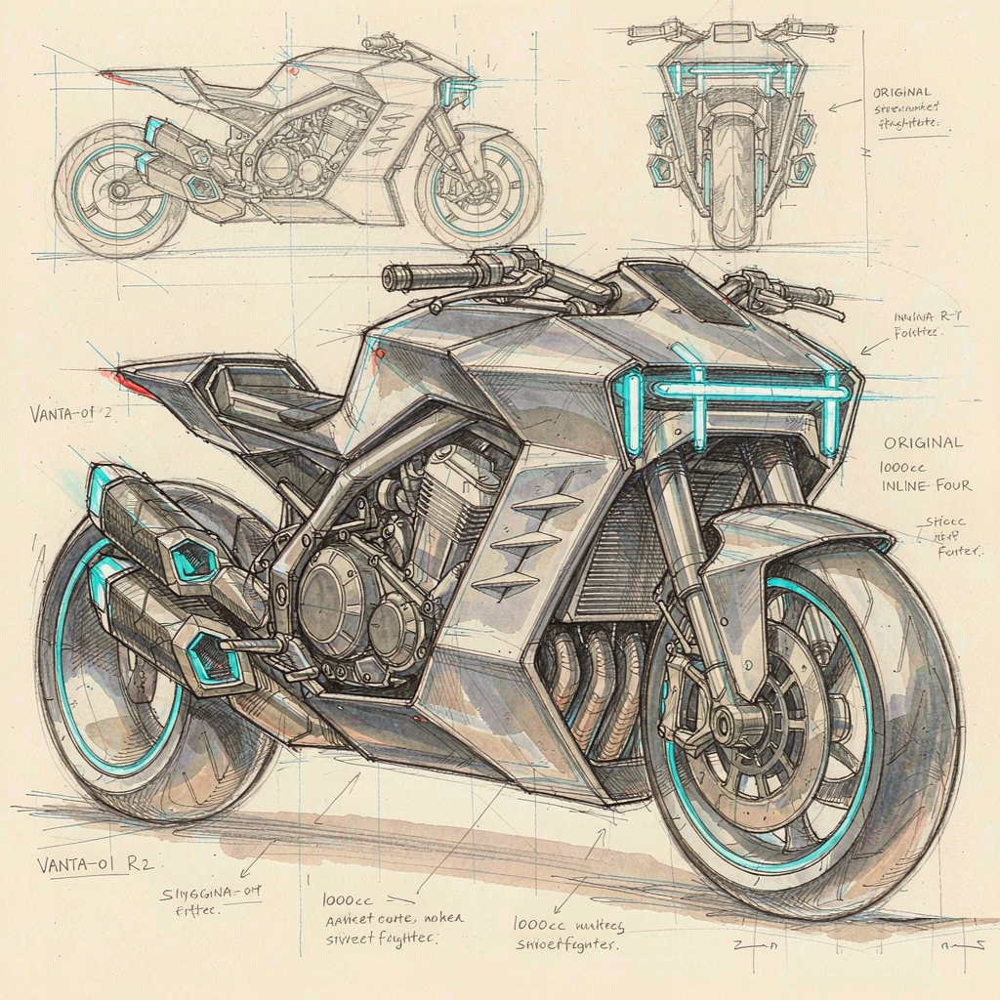
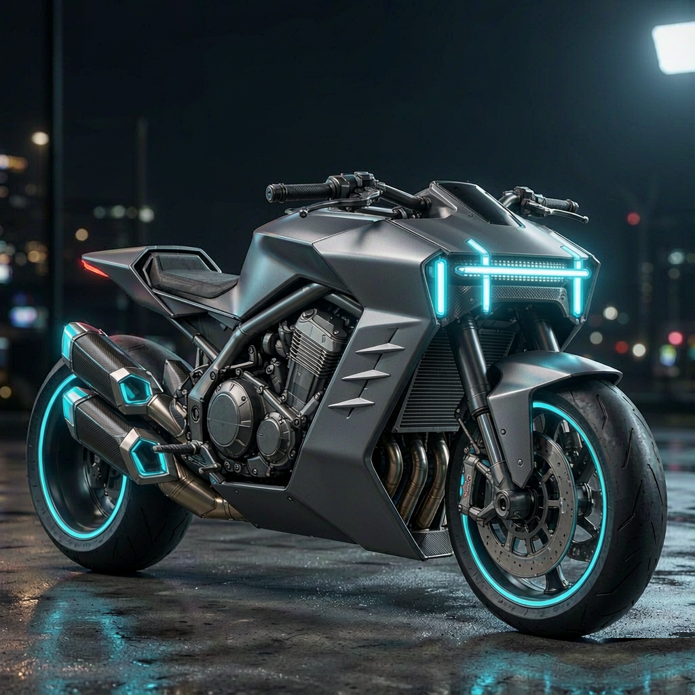
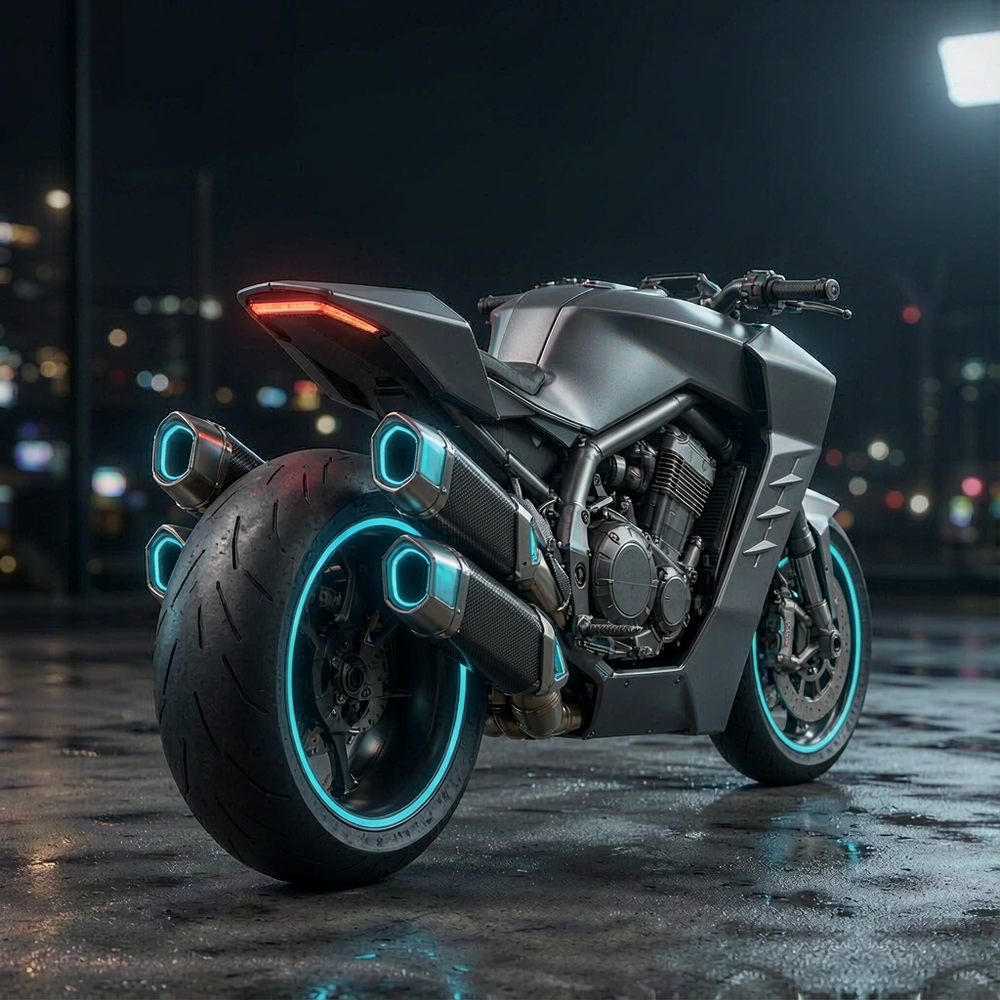
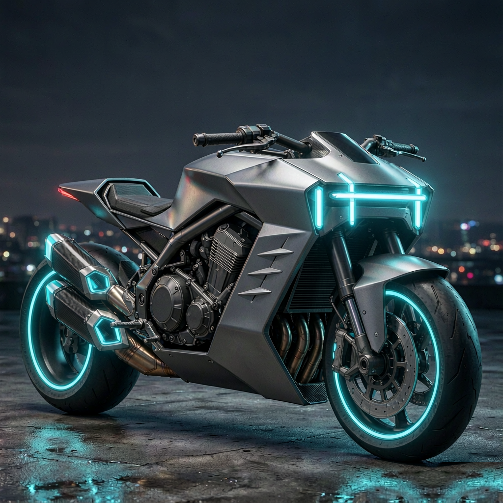

1000cc 公升级直列四缸 · 双侧四出排气 · 加大头灯与车身体量 · 设计草图 + 两张照片级渲染
沿用 A 的折面单体壳、贯穿脊线、三道斜向鳍片、封闭碟轮青色光环与短上翘尾；只放大该放大的、换掉动力总成，避免变成另一台车。



| 大灯 | 超薄光刃 → 加厚加宽的宽幅矩阵 LED 光幕（约 2 倍高度），两端竖向 DRL 大幅加长，构成 T 形前脸；前整流罩同步加宽加高。 |
| 车身 | 油箱与折面侧壳加宽加厚、肩线抬高、轴距略拉长，整体视觉体量约 +15%，往公升级的肌肉感靠。 |
| 排量 | 纯电 + 电池模块 → 998cc 水冷直列四缸，缸盖散热片、水箱格栅、离合器盖、编织油管、四根排气头段全部外露。 |
| 排气 | 无 → 双侧各 2 出，共 4 出；六边形斜切短消音器上下阶梯错位，碳纤维隔热罩，出口内嵌青色细光环，与折面尾壳一体化。 |

| 发动机型式 | 水冷 四冲程 DOHC 16 气门 直列四缸，横置，发动机承载式车架 |
| 排量 | 998 cc（1000cc 公升级 / liter-class） |
| 缸径 × 行程 | 78.0 × 52.2 mm · 压缩比 13.0 : 1 |
| 最大功率 | 147 kW / 200 PS @ 11,500 rpm |
| 最大扭矩 | 112 N·m @ 9,000 rpm |
| 供油 / 进气 | Ø48 mm 电子节气门、每缸双喷油器、冲压进气 + 可变进气道长度 |
| 排气系统 | 4-2-1-2 钛合金头段；双侧各 2 出、共 4 出短六边形斜切消音器，碳纤维隔热罩，内置可变排气阀 |
| 传动 | 6 速常啮合 + 双向快排、湿式多片滑动离合、链条终传 |
| 车架 | 铝合金三角镂空双翼梁，外露发动机作为受力件 |
| 前悬挂 | Ø43 mm 倒立前叉，压缩 / 回弹 / 预载全可调，行程 120 mm |
| 后悬挂 | 中置单枪多连杆，全可调，行程 130 mm；单摇臂 |
| 制动 | 前 双 Ø320 mm 浮动盘 + 径向四活塞；后 Ø250 mm 单盘 + 双活塞；弯道 ABS |
| 轮胎 | 前 120/70 ZR17 后 200/55 ZR17（封闭碟轮 + 青色发光轮缘） |
| 轴距 / 尺寸 | 1,470 mm / 2,130 × 830 × 1,120 mm |
| 座高 / 质量 | 825 mm / 整备 214 kg（干重 196 kg） |
| 油箱 | 17 L |
| 0–100 km/h | 3.1 s |
| 极速 | 265 km/h（电子限速） |
| 电控 | 六轴 IMU、多段牵引力控制、弯道 ABS、弹射起步、防翘头、4 种骑行模式、双向快排、TFT 仪表 |
| 灯光 | 宽幅矩阵 LED 光幕 + 双竖向 DRL（近远光自适应）、光带式尾灯、轮缘与排气口青色氛围环 |
| 部位 | v1 · 原 A（纯电） | v2 · R2（本版） |
|---|---|---|
| 前脸 | 贯穿式超薄光刃 + 两端短竖 DRL | 加厚宽幅矩阵光幕 + 加长竖 DRL，T 形前脸，前罩加宽加高 |
| 上部 | 折面单体壳偏紧、肩线平缓 | 同造型但加宽加厚、肩线抬高、轴距拉长 |
| 中段 | 三角车架内为外露电池模块 | 998cc 直列四缸 + 水箱 + 四根头段 |
| 尾部 | 无排气，导流鳍片承担视觉重量 | 四出排气与折面尾壳一体化，成为尾部视觉重心 |
| 保留 | 折面单体壳与贯穿脊线、每侧三道斜向鳍片、悬浮单座、短上翘尾 + 细红线尾灯、前后封闭碟轮 + 青色轮缘、哑光钛灰 / 电光青配色 | |
仍以 Z1000 所属的街车品类比例为参照，不复用其识别性设计。但这一版按你明确要求加入了「四出排气」，因此原本「纯电、不做四出」这条规避策略不再适用，改在实现形态上拉开距离：
| 维度 | 处理方式 |
|---|---|
| 只借鉴 | 宽平车把、略前倾骑行三角、裸露机械、短尾、1000cc 四缸街车的动力布局与前后轮比例 —— 品类通用，不构成特定车型特征。 |
| 四出如何做自己的 | 四出是公升级四缸街车的常见布局，但本版用六边形斜切截面（非圆管）、双侧上下阶梯错位（非四筒并列叠置）、与折面尾壳一体成型 + 出口内青色光环 + 碳纤维隔热罩；这些是 R2 自己的形态语言，与折面单体壳同一套设计逻辑。 |
| 明确避开 | ① 前脸仍是原创 T 形宽幅光幕，不用锐角双眼灯 ② 不做叠层侧罩 ③ 不用圆筒四出 / 四筒并列 ④ 无 Z 字标、无厂商名、无商标 ⑤ 配色不含绿色。 |
| 法律边界 | 虚构代号 VANTA-01 R2；草图手写标注为设计说明（"1000cc INLINE-FOUR" 等）与无意义笔迹，不含任何厂商名；未使用实车照片、车标或专利造型。 |
VANTA-01 R2 · 概念设计稿 · 参数均为设定值，非实车数据